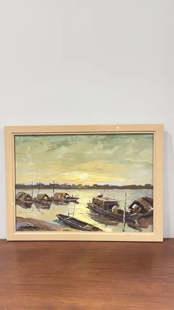
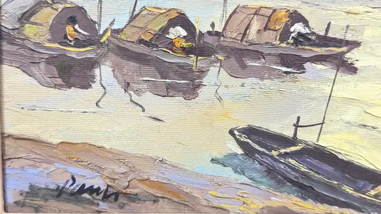

Paintings & Prints
Sampans at Sunset on a Wide River, Signed, Framed
· mid to late 20th century
Price Upon Request


About the Item
A palette-knife river scene at sunset, with three arched-roof sampans moored in a row, their dark violet-brown hulls and reflections cutting across a broad expanse of water that glows lemon and cream where the low sun strikes it. A single black boat lies on the pale sandbank in the foreground and a low, distant treeline runs along the horizon under a sky of thick sage and yellow strokes. The paint is laid on in flat, deliberate slabs, leaving a strongly ridged surface, and small figures in conical hats are indicated with a few dabs of white and ochre. Medium: oil on canvas. Signed lower left of the canvas, in black. Condition: Impasto is intact with no flaking seen; the painted frame is chipped and marked along the outer edges and there is a small paler patch on the lower rail.
Details
- Creation Year:
- mid to late 20th century
- Dimensions:
- Height: 15.5 in (39.37 cm)
Width: 19.5 in (49.53 cm)
outside of frame - Medium:
- oil on canvas
- Period:
- 20Th
- Condition:
- Offered in the condition shown in the photographs.
- Reference Number:
- VO-81
- Documentation:
- no certificate photographed